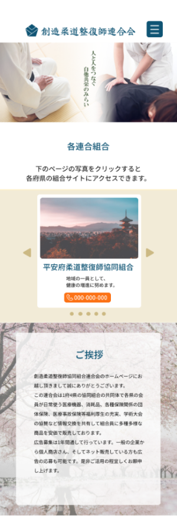

柔道整復師 website
グループ実制作（デザインのみ）
point
-
主に年配男性向け
-
連合会の認知度を上げ、連合会に加入してくれる柔道整復師会員を増やす
-
各県ごとにあるWebサイトを結びつけるポータルサイト
-
配色は、信頼感のもてる、落ち着いたトーンの青と黄色を使い、アクセントにオレンジを使用
pc版
一般の方を対象にした内容のページと、組合に加入してほしい柔道整復師のページを、切り替えタブを使って1枚のHTMLに表示しました。わかりやすいようそれぞれを2色で分けています。
スマホ版
